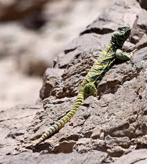
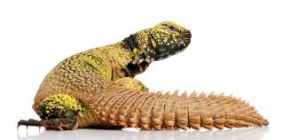
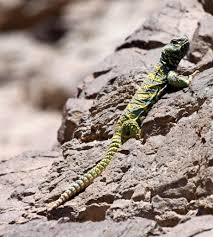

|  |
|
Here is an image of where uromastyx's reside |
|
Example of a reptile rocky enclosure background
|
|
Image of a uromastyx in its natural habitat  |
Uromastyx is a genus of lizards which usually reside in northern africa aswell as parts of the middle east. The most profound feature of this species of lizard are their spiney tails, this tail is commonly used to hit predators, and protect the rest of their body when under cover.
Uromastyx's are a herbivorous lizard, this means they eat plants.
Here is a small list of plants and seeds they enjoy include:
Their diet should be 80-90% leafy greens (usually sprinkled with seeds), and 5-10% fruits only as a treat.
make sure to dust their food with calcium and vitamin D3 supplements to prevent deficiencies.
The largest uromastyx species is the egyptian uromastyx, with many getting to over 30 inches in length
The oldest uromastyx ever was a uromastyx nigriventris, (moroccan uromastyx) which lived for at least 46 years
Uromastyx have similar diets to tortises, for this reason we reccomend you check out this website,
though do your own research before feeding your pet anything from here
for more information on this lizard; go and visit the wikipedia here
for potential food ideas, click here (though always do your own research before feeding your pet)
if you want some youtube videos over uromastyx's I reccomend you watch some youtube videos from this person
| Uromastyx picture | common name | scientific name | average size |
|---|---|---|---|
 |
Saharan uromastyx | Uromastyx geyri | 10-13 inches |
 |
Ocellated Spinytail | Uromastyx ocellata | 11-12.5 inches |
 |
Moroccan uromastyx | Uromastyx ornata | 15-16 inches |
| Egyptian uromastyx | Uromastyx aegyptia | 25-30 inches |